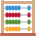

Insulto komandos forma
Skubi duomenų registracija, laikų sekimas, vaistų skaičiuoklės ir santrauka HIS sistemai
Pacientas
Naujas
☰
Meniu
Aktyvacija
Paciento atvykimas

NIHSS
Pasiruošimas trombolizei
Sprendimas
Santrauka
Analitika
Komandos aktyvacija
GMP pranešimo laikas
Dabar
−5
+5
Paciento duomenys
Asmens kodas
Kopijuoti
Vardas, Pavardė
Gimimo data
Simptomai
Veido paralyžius
Kalbos sutrikimas
Nevykdo paliepimų
Rankos silpnumas
Kojos silpnumas
Žvilgsnis fiksuotas ar nukrypęs
Vartojami vaistai
Varfarinas (Warfarin, Orfarin)
Apiksabanas (Eliquis)
Rivaroksabanas (Xarelto)
Dabigatranas (Pradaxa)
Edoksabanas (Lixiana)
Nežinoma
Paskutinį kartą matytas sveikas
<4,5 val (aktyvuoti insulto komandą)
>4,5 val bet <24 val (informuoti SPS gyd.)
Nežinoma
Parametrai
Gliukozė
Sistolinis AKS
Diastolinis AKS
ŠSD
SpO₂
Temperatūra
Paciento atvykimas
Nuo atvykimo:
Nuo simptomų pradžios:
Atvykimo laikas
Dabar
−5
+5
Paskutinį kartą matytas sveikas
Paskutinį kartą matytas sveikas
Nežinoma
Miego vidurio laikas
Dabar
−5
+5
Miego pradžia
Dabar
−5
+5
Miego pabaiga
Dabar
−5
+5
Simptomai
Veido asimetrija
Rankos silpnumas
Kojos silpnumas
Kalbos sutrikimas
Regos sutrikimas
Galvos svaigimas
Kairė pusė
Dešinė pusė
▶
Kontraindikacijos trombolizei
Pacientas vartoja netiesioginio veikimo antikoaguliantus (INR ≥1,7)
Arterijos punkcija nekompresuojamoje vietoje per pastarąsias 7 d.
Didelė operacija ar sunkus sužalojimas per pastarąsias 14 d.
Sunki galvos trauma ar insultas per paskutinius 3 mėn.
Ankstesnis intrakranijinis kraujavimas
Intrakranijinis navikas, AVM ar aneurizma
Ītariama subarachnoidinė hemoragija
Lumbalinė punkcija per pastarąsias 7 d.
Trombocitų kiekis <100×10⁹/l
AKS ≥185/110 mmHg nepaisant gydymo
Gliukozė <2,8 arba >22 mmol/l
Traukuliai insulto pradžioje
Aktyvus vidinis kraujavimas
Virškinamojo ar šlapimo takų kraujavimas per pastarąsias 21 d.
Nėštumas
Infekcinis endokarditas
Miokardo infarktas per paskutinius 3 mėn.
Heparino vartojimas per pastarąsias 48 h su pailgėjusiu aPTT
Tiesioginiai trombino ar Xa inhibitoriai su patologiniais tyrimais
KT rodo >1/3 ACM teritorijos pažaidą
Nekontroliuojama hipertenzija, reikalinga intensyvi terapija
▶
Kontraindikacijos trombektomijai
Ligonis vartoja netiesioginio veikimo antikoaguliantus ir TNS >3 (geriamieji ne vitamino K antagonistai – tiesioginiai trombino ar Xa inhibitoriai – nelaikomi netinkamumo kriterijumi)
Nekontroliuojama arterinė hipertenzija: sistolinis AKS >185 mmHg arba diastolinis AKS >110 mmHg iki gydymo pradžios
Gliukozės koncentracija kraujyje <2,8 mmol/l
Glikemija >22 mmol/l arba taikomas gydymas hemodialize/peritonine dialize
Trombocitopenija <30×10⁹/l
Žinoma kraujavimo diatezė
Aktyvus vidinis kraujavimas
Atlikus galvos smegenų KT, nustatomi intracerebrinės arba subarachnoidinės kraujosruvos požymiai
Ūminės išemijos zona galvos KT/MRT užima >1/3 vidurinės smegenų arterijos teritorijos ir/ar ryškus masės efektas su vidurio linijos poslinkiu
CNS pažeidimas su didele kraujavimo rizika (tumoras, abscesas, kraujagyslinė malformacija, aneurizma); intrakranijinė ar spinalinė chirurgija, galvos trauma ar insultas kitoje teritorijoje per paskutinius 3 mėn.
Intrasmegeninė kraujosruva anamnezėje
Poūminis bakterinis endokarditas
Sunkios gretutinės ligos su bloga prognoze
Esant nėštumui sprendžiama individualiai dalyvaujant akušeriui ginekologui
NIHSS
NIHSS (pradinis)
Sąmonė
1a. Sąmonės lygis
0 – Budrus
1 – Nevisiškai budrus, reaguoja į menką stimulaciją
2 – Reaguoja tik į stiprią/pakartotinę stimulaciją
3 – Nereaguoja
1b. Klausimai
0 – Atsako abu
1 – Atsako vieną
2 – Neatsako
1c. Komandos
0 – Atlieka abi
1 – Atlieka vieną
2 – Neatlieka
Žvilgsnis ir regėjimas
2. Žvilgsnis
0 – Normalus
1 – Dalinis paralyžius
2 – Priverstinis nukrypimas
3. Regėjimas
0 – Nėra deficito
1 – Dalinė hemianopsija
2 – Pilna hemianopsija
3 – Dvišalė hemianopsija / aklumas
Veidas
4. Veido judesiai
0 – Simetriški
1 – Lengvas paralyžius
2 – Dalinis paralyžius
3 – Visiškas paralyžius
Rankos
5a. Rankos (K)
0 – Nedreifuoja
1 – Dreifuoja
2 – Nedidelis judėjimas prieš gravitaciją
3 – Neįveikia gravitacijos
4 – Judesių nėra
5b. Rankos (D)
0 – Nedreifuoja
1 – Dreifuoja
2 – Nedidelis judėjimas prieš gravitaciją
3 – Neįveikia gravitacijos
4 – Judesių nėra
Kojos
6a. Kojos (K)
0 – Nedreifuoja
1 – Dreifuoja
2 – Nedidelis judėjimas prieš gravitaciją
3 – Neįveikia gravitacijos
4 – Judesių nėra
6b. Kojos (D)
0 – Nedreifuoja
1 – Dreifuoja
2 – Nedidelis judėjimas prieš gravitaciją
3 – Neįveikia gravitacijos
4 – Judesių nėra
Kiti
7. Ataksija
0 – Nėra
1 – Vienoje galūnėje
2 – Dviejose galūnėse
8. Jutimai
0 – Normalūs
1 – Lengvas ar vidutinis sutrikimas
2 – Sunkus ar visiškas sutrikimas
9. Kalba
0 – Nėra afazijos
1 – Lengva ar vidutinė afazija
2 – Sunki afazija
3 – Globali afazija / nekalba
10. Artikuliacija
0 – Normali
1 – Lengva ar vidutinė dizartrija
2 – Sunki dizartrija
11. Neglect
0 – Nėra
1 – Vienos modalės neglektas
2 – Sunkus/daugiamodalis neglektas
Viso:
0
Taikyti
Pasiruošimas trombolizei
Svoris (kg)
Sistolinis AKS (mmHg)
Diastolinis AKS (mmHg)
INR
1,0
AKS korekcija
Labetololis
Enalaprilis
Metoprololis
Natrio nitroprusidas
Kita
Trombolitiko skaičiuoklė
Vaistas
Tenekteplazė (TNK) – 0,25 mg/kg (max 25 mg), bolius
Alteplazė (tPA) – 0,9 mg/kg (max 90 mg), 10% bolius + 90% per 60 min
Koncentracija (mg/ml)
Bendra dozė (mg)
Tūris (ml)
Bolius 10% (mg / ml)
Infuzija 90% per 60 min (mg / ml / ml/val)
Pastaba: klinikiniai sprendimai remiasi vietinėmis gairėmis. Ši skaičiuoklė – pagalbinė.
Pradėta trombolizė
Trombolizė pradėta
Dabar
−5
+5
Sprendimas
Sprendimo laikas
Sprendimo laikas
Dabar
−5
+5
Sprendimas
Taikoma IVT, indikacijų MTE nenustatyta
Taikoma IVT, rengiamasi MTE atlikimui
Rengiamasi MTE atlikimui
Reperfuzinis gydymas kontraindikuotinas, taikyti konservatyvią taktika
Santrauka (kopijavimui į HIS)
📋
Kopijuoti
Analitika
Nuo atvykimo iki injekcijos (min)
Nuo atvykimo iki sprendimo (min)
Nuo paskutinio žinomo sveiko iki atvykimo (min)
Pradinis kraujospūdis normos ribose
⚙️ Nustatymai
TNK numatyta koncentracija (mg/ml)
tPA numatyta koncentracija (mg/ml)
Automatinis išsaugojimas
Įjungtas
Išjungtas